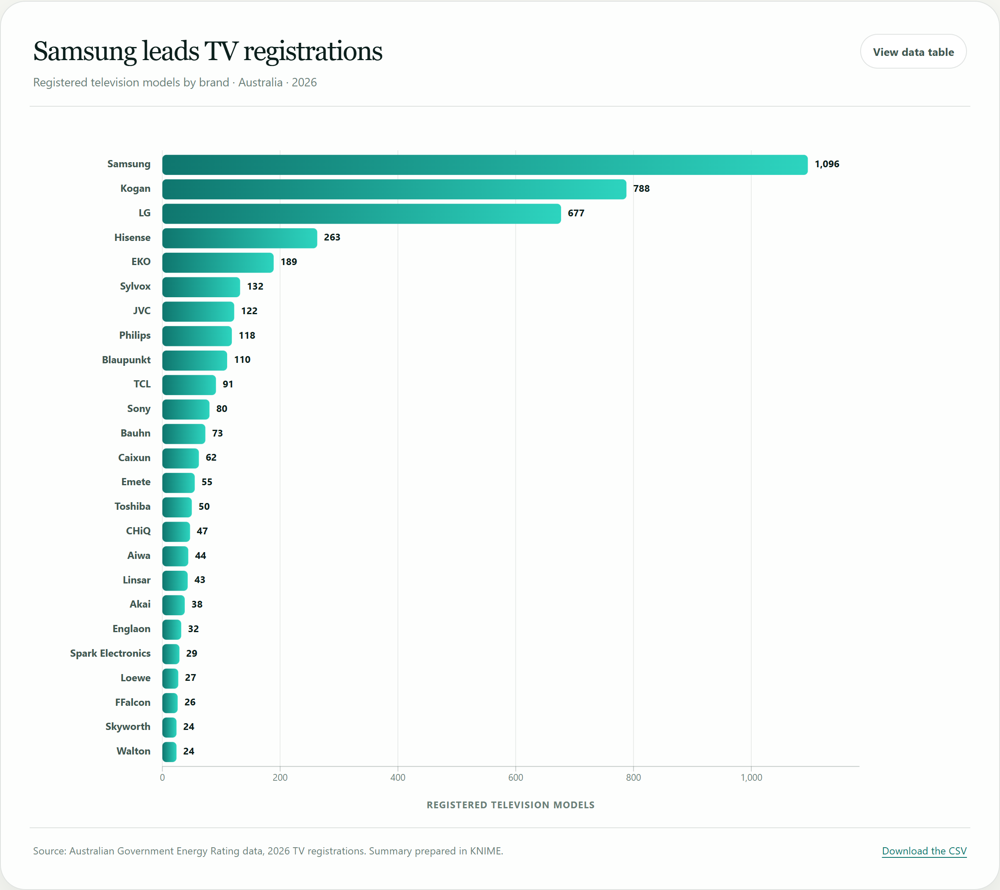

Week 4 · Exercises 4.3–4.7
From CSV to a labelled bar chart.
This is the build log for the chart on the dashboard. It starts with an empty responsive container and finishes with a sorted horizontal bar chart that has scales, an axis, a group per brand and value labels.
The finished chart
The final chart is generated from data/tvBrandCount.csv. The screenshot
below is the actual output of js/main.js; the live version is on the
dashboard.

Set up the responsive canvas
The D3 code is attached to a .responsive-svg-container. The SVG uses a
viewBox instead of fixed pixel dimensions, so it scales with the window
while keeping the same internal coordinate system.
<!-- index.html -->
<div class="responsive-svg-container" id="chart-container"></div>
/* style.css */
.responsive-svg-container {
width: 100%;
max-width: 1200px;
margin-inline: auto;
}
// js/main.js
const svg = d3.select("#chart-container")
.append("svg")
.attr("viewBox", "0 0 1120 840")
.attr("preserveAspectRatio", "xMidYMid meet");A test rectangle can be appended before the data is loaded. It is useful for checking that the canvas and the coordinate system are working; the final chart replaces it with data-driven bars.
svg.append("rect")
.attr("x", 10)
.attr("y", 10)
.attr("width", 414)
.attr("height", 16)
.attr("fill", "blue");Load and type the CSV
d3.csv() returns a promise. The row conversion function receives each row
and returns a new object. The unary plus (+d.count) converts the count
from a string into a number so D3 can calculate with it.
d3.csv("data/tvBrandCount.csv", row => ({
brand: row.brand,
count: +row.count
}))
.then(data => {
console.log("TV brand data", data);
console.log("Number of brands", data.length);
console.log("Maximum count", d3.max(data, d => d.count));
console.log("Minimum count", d3.min(data, d => d.count));
data.sort((a, b) => b.count - a.count);
drawBarChart(data);
});What the console shows
TV brand data (25) [{…}, {…}, …]
Number of brands 25
Maximum count 1096
Minimum count 24
Extent (2) [24, 1096]Data note: the CSV contains 25 brands and 4,240 registered models. Samsung has 1,096, Kogan 788 and LG 677. The values come from the 2026 TV registrations summary prepared in KNIME.
Build tvBrandCount.csv in KNIME.
Exercise 4.4 is the only step in 4.3–4.7 that happens in KNIME. 4.3, 4.5, 4.6 and 4.7
are all D3 code. The chart cannot count brands by itself, so the raw registration
export is summarised to two columns first: brand and count.
Those two names have to match the row conversion function in
js/main.js exactly, or every bar renders with a NaN width.
Fastest route: download
W4_Ex4.4_TV_Brand_Count.knwf
and open it with File → Import KNIME Workflow. The reader already points
at the bundled tv_2026_02_15.csv, the writer is set to
quote values: Never, and executing all nodes writes
tvBrandCount.csv into the workflow's own data folder. The steps
below explain every node so you can rebuild it from the class workflow
(2026 TV Data.knwf) if your unit requires that instead.
A String Replacer, a second Row Filter (the long-tail cut) and a Column Renamer sit inside stages 3–6; they are covered in the steps below.
Read the raw registration export
Drag a CSV Reader onto the canvas and configure it for
tv_2026_02_15.csv.
- File
tv_2026_02_15.csv(bundled in the workflow's data folder)- Delimiter
- Comma
, - Header
- First row contains column names
- Encoding
- UTF-8
Execute the node: 4,724 rows × 32 columns.
Keep only the three columns you need
Add a Column Filter and move everything except these three columns to the “Exclude” list:
- Keep 1
Brand_Reg— the manufacturer name- Keep 2
SoldIn— used as the column to count- Keep 3
Availability Status— Available / Unavailable
Filtering columns early makes the preview table readable and keeps the GroupBy output to the two columns the chart wants.
Normalise the brand names
The raw export writes the same brand in different ways — capitals, punctuation and
extra spaces. Add a String Cleaner on Brand_Reg:
- Change casing
lowercase- Remove punctuation
- on
- Remove leading / trailing whitespace
- on
- Remove duplicate whitespace
- on
- Output
Replacethe original column
Then add a String Replacer for the one brand that still splits in
two: pattern samsung electronics, replacement samsung,
matching in the Brand_Reg column, case insensitive. Without this, Samsung
becomes two bars.
Check the domain before you trust the counts. Open the cleaned column's statistics and look for “LG” and “lg”, or “Hisense” and “HISENSE”. If both forms survive, the String Cleaner is not replacing the column.
Keep the models sold here and still on sale
Add two Nominal Value Row Filter nodes in a row, then choose Include for the values listed below.
- Filter 1 · column
Availability Status→ includeAvailable- Filter 2 · column
SoldIn→ includeAustralia,Australia,Fiji,Australia,New Zealand,Australia,Fiji,New Zealand
SoldIn is a multi-value string, so there are four combinations that
contain Australia. Tick all four; ticking only Australia returns 344
rows and destroys the counts. The output of this stage is
4,508 rows.
A wildcard row filter on SoldIn with pattern Australia* does
the same job in one node. Either way, check the row count before moving on.
Count the models per brand
Add a GroupBy node.
- Group column
Brand_Reg- Aggregation
SoldIn→Count
That gives 30 brands. KNIME names the aggregated column after the node settings, so check the column name in the output preview before you wire up the next node.
Rename the count column and cut the long tail
Add a Column Renamer so the two columns are exactly
brand and count: rename Brand_Reg to
brand and the aggregated count column to count.
Then add a Row Filter on count with the condition
count >= 20. That leaves 25 rows. The five brands
under 20 models (268 models in total) are dropped because their bars would be a few
pixels wide and the labels would collide.
Write the CSV without quotes
Add a CSV Writer and configure it carefully.
- File
data/tvBrandCount.csv- Delimiter
- Comma
, - Header
- Write column header
- Quote values
Never- Encoding
- UTF-8
Quoted values are the classic failure here: "samsung","1096" still
parses in D3, but +"1096" only works while the quotes are plain
". With quote values: Never the file is exactly what the row
conversion function expects, and no column reads as a string.
What the output should look like
| brand | count |
|---|---|
| samsung | 1,096 |
| kogan | 788 |
| lg | 677 |
| hisense | 263 |
| eko | 189 |
The full file has 25 rows and one header row. The counts sum to
4,240 models — the same number of rows as
data/tv_2026_cleaned.csv. If your total is 4,508, the long-tail filter in
step 6 is missing or still set to the wrong comparison.
Bind data to rectangles
The data array is bound to a set of <rect> elements with
.data() and .join(). D3 creates one rectangle per row. The
count controls the width; a constant controls the height.
const barHeight = 20;
const barSpacing = 5;
svg
.selectAll("rect")
.data(data)
.join("rect")
.attr("width", d => d.count)
.attr("height", barHeight)
.attr("fill", "blue")
.attr("x", 0)
.attr("y", (d, i) => i * (barHeight + barSpacing));At this stage the bars overlap because the x value is always 0. The y position uses the row index to space the bars down the page. The next exercise replaces these raw pixel values with scales.
Make the chart fit the canvas
A linear scale maps the count domain to the available width. A band scale divides the available height between the brands and adds padding. Neither scale changes the data; they only translate data values into screen coordinates.
const xScale = d3.scaleLinear()
.domain([0, d3.max(data, d => d.count) * 1.08])
.range([0, innerWidth]);
const yScale = d3.scaleBand()
.domain(data.map(d => d.brand))
.range([0, innerHeight])
.padding(0.18);
// width is now a scaled value, not a raw pixel count
.attr("width", d => xScale(d.count))
// height and position come from the band scale
.attr("height", yScale.bandwidth())
.attr("y", d => yScale(d.brand));Why 1.08? The domain ends slightly above the largest value (1,096 × 1.08 ≈ 1,184) so the longest bar and its value label do not touch the edge of the canvas. The domain maximum can be changed without changing the data.
Group the bar and its labels
A <g> per brand keeps the rectangle, the brand name and the value
label together. The group is translated once to the band's y position; the rectangle
inside starts at y=0, so the y coordinate is not applied twice.
const barAndLabel = chart
.selectAll("g.bar-row")
.data(data, d => d.brand)
.join("g")
.attr("class", "bar-row")
.attr("transform", d => `translate(0, ${yScale(d.brand)})`);
barAndLabel.append("rect")
.attr("class", "bar")
.attr("x", 0)
.attr("y", 0)
.attr("width", d => xScale(d.count))
.attr("height", yScale.bandwidth());
barAndLabel.append("text")
.attr("class", "bar-label")
.attr("x", -14)
.attr("text-anchor", "end")
.text(d => d.brand);
barAndLabel.append("text")
.attr("class", "bar-value")
.attr("x", d => xScale(d.count) + 8)
.text(d => d.count);
The final code adds text-anchor="end" to right-align the brand names,
a dominant-baseline so the text sits in the middle of the bar, an x-axis,
grid lines, formatted numbers and a tooltip. The data is still the same CSV.
What to show in the demonstration
- Open the dashboard and resize the window to show the responsive SVG.
- Hover a bar to show the brand, model count and share of the market.
- Open the data table and compare it with the chart.
- Open
js/main.jsand point to the row conversion, scales and group transform. - Open the Elements panel and show that each bar is a real
<rect>inside a<g>. - Show the before/after and annotated screenshots on the Exercise 4.1 page.